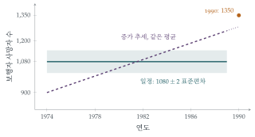

STEP I 1992, 문제 14
계속 읽기 전에 문제를 먼저 읽어 보자. 문제는 STEP Support Programme의 문제 데이터베이스에 있다: step.maths.org/questions/92-s1-q14
도입
통계학(statistics)은 데이터로부터 배우는 학문이며, 그 첫 번째 교훈은 숫자가 스스로 말하지 않는다는 것이다. “여섯 배 더 안전하다”, “놀라운 증가”, “참사 증가”: 날마다 신문 헤드라인은 숫자를 주장으로 바꾸고, 그 주장은 틀린 경우가 많다. 숫자가 거짓이어서가 아니라, 엉뚱한 대상과 비교하거나 평범한 무작위 변동을 추세로 착각하기 때문이다.
이 문제에는 공식이 전혀 없으며, 이는 STEP 문제로서는 드문 일이다. 이 문제는 통계학자처럼 생각하기를 요구한다. 각 헤드라인을 정당화하려면 무엇을 알아야 하는가? 그리고 순전히 우연만으로도 변동이 얼마나 클 것으로 예상되는가? 답에는 푸아송 분포(Poisson distribution)(12.18 절)가 쓰이며, 여기서의 추론은 이 장의 나머지 부분의 토대가 된다.
시작하기 전에
사망 사고가 일정한 비율로 서로 독립적이고 무작위로 일어난다면, 연간 총계는 얼마나 변동해야 하는가? 평균이 한 해에 \(1080\)이라면, 해마다 나타나는 전형적인 편차는 얼마인가?
서로 독립인 드문 사건의 개수는 근사적으로 푸아송 분포를 따르며, 평균이 \(\mu\)인 푸아송 개수는 분산(variance)이 \(\mu\)이고 표준편차(standard deviation)가 \(\sqrt\mu\)이다. \(\mu = 1080\)이면 표준편차는 약 \(33\)이다. 따라서 연간 총계가 약 \(1015\)에서 \(1145\) 사이라면 전혀 특별할 것이 없다.
차근차근 풀기
단계 1 “걷는 것보다 비행기를 타는 것이 여섯 배 더 안전하다”
보행자 사망자는 연간 \(1080\)명, 항공 사망자는 연간 \(180\)명이다. 정확히 무엇의 여섯 배인가?
이 헤드라인은 총 사망자 수를 비교하지만, 안전성은 위험(risk), 즉 노출(exposure) 단위당 사망자 수의 문제이다. 거의 모든 사람이 매일 걷는 반면, 비행기를 타는 사람은 비교적 적고 그마저도 가끔일 뿐이다. 공정한 비교를 하려면 이동한 킬로미터당, 이동 시간당, 또는 이동 1회당 사망자 수를 써야 하며, 이들은 매우 다른 답을 줄 수 있다(항공 여행은 킬로미터당으로는 극히 안전하지만, 이동 1회당으로는 그만큼 인상적이지 않다. 대부분의 항공 사망 사고가 이륙과 착륙 때 일어나기 때문이다). 주어진 수치로는 상대적 안전성에 대해 아무것도 “증명”할 수 없다. 또한 “도로 사고로 사망한 보행자”는 좁은 범주이며, 전체 도로 사망자 수는 훨씬 더 많다.
단계 2 “하늘이 더 안전해졌다: 1990년 사망자 단 125명”
항공 사망은 서로 독립인 드문 사건과 같은가? 연간 총계가 얼마나 변동할 것으로 예상하는가?
항공 사망은 무리 지어 일어난다. 추락 사고 한 번에 수백 명이 사망할 수 있다. 따라서 연간 총계는 주로 추락 사고의 횟수에 좌우되는데, 이 횟수는 작으며, 연간 총계는 해마다 극도로 크게 변동한다. 평균 \(180\)명에 비해 사망자가 \(125\)명인 해가 한 번 있었다는 것은 아무 변화도 없다는 것과 완전히 양립한다. 추락 사고가 한 번만 더 있었어도 수치는 완전히 달라졌을 것이다. 한 해의 데이터로는 추세를 보여 줄 수 없다.
단계 3 “도로 참사 증가: 화요일에 7명 사망”
평균적으로 하루에 보행자가 몇 명 사망하는가? 일일 사망자 수가 푸아송 분포를 따른다면, 하루에 \(7\)명 이상이 사망하는 경우를 얼마나 자주 보게 되는가?
평균은 하루에 보행자 사망자 \(\frac{1080}{365} \approx 2.96\)명이다. 일일 개수가 이 평균을 갖는 푸아송 분포를 따른다면 \(\mathrm{P}(\geq 7) \approx 0.031\)이다. 즉 순전히 우연만으로도 1년에 약 \(11\)일은 보행자 사망자가 \(7\)명 이상일 것이다. (게다가 “도로 참사”에는 아마 운전자와 승객도 포함될 것이므로, 하루에 도로 사망자가 \(7\)명인 것은 더욱 놀랄 일이 아니다.) 하루의 데이터로는 추세에 대해 아무것도 말할 수 없다. 이 헤드라인은 변동이 매우 큰 계열에서 극단적인 값 하나를 골라낸 것으로, 전형적인 오류이다.
단계 4 “놀라운 증가: 1990년 보행자 1350명 사망”
\(1350\)을 푸아송 표준편차와 비교하라. 이것은 단지 우연인가? 아니라면 달리 무엇으로 설명할 수 있으며, 그것이 “놀라운 증가”를 정당화하는가?
이것이 이 문제의 핵심 부분이다. 일정한 푸아송 모형 아래에서 \(1350\)은 평균 \(1080\)보다 \(270\)만큼 크며, 이는 약 \(8\) 표준편차에 해당한다. 우연일 가능성은 극히 낮다. 따라서 무언가가 변했을 가능성이 크다. 그러나 이 헤드라인은 여전히 여러 면에서 지나치다.
평균에 가려진 추세. 수치 \(1080\)은 \(16\)년간의 평균이다. 사망자 수가 1974년 약 \(900\)명에서 1989년 약 \(1260\)명으로 꾸준히 증가했더라도 평균은 여전히 \(1080\)이었을 것이고, 1990년의 \(1350\)은 갑작스러운 “놀라운” 증가가 아니라 기존 추세의 연속일 뿐이다(그림 13.1.1). 연도별 수치가 필요하다.
노출. 인구 증가, 보행 증가, 교통량 증가, 또는 인구 고령화는 모두 이동 1회당 도로가 더 위험해지지 않아도 사망자 수를 늘릴 것이다. 1인당 비율, 또는 걸은 킬로미터당 비율이 올바른 척도이다.
정의. 사망을 기록하거나 분류하는 방식의 변화(예를 들어 사고 후 얼마 동안 일어난 사망까지 집계하는지)만으로도 수치가 급등할 수 있다.
과대산포(over-dispersion). 실제 연간 개수는 날씨나 경제 활동 같은 조건이 변하기 때문에 푸아송 모형이 시사하는 것보다 더 크게 변동한다. “\(8\) 표준편차”는 어느 정도 신중하게 받아들여야 한다.
증가는 아마 실제이겠지만, 그것이 놀라운 일인지, 그리고 무엇이 원인인지 알려면 더 많은 데이터가 필요하다.

돌아보기
같은 것끼리 비교하라. 위험에는 분모(denominator)가 필요하다. 1인당, 킬로미터당, 또는 이동 1회당 사망자 수이다.
자연스러운 변동을 알라. 푸아송 변동성, 그리고 무리 지어 일어나는 사건의 훨씬 더 큰 변동성은 어떤 변화가 주목할 만한지 알려 준다.
평균은 추세를 가린다. 요약 수치 하나로는 어떤 양이 시간에 따라 어떻게 변해 왔는지 설명할 수 없다.
숨은 수학
신호와 잡음
모든 통계적 질문은 근본적으로 신호(signal)(실제 효과나 추세)와 잡음(noise)(무작위 변동)을 분리하는 문제이다. 푸아송 모형은 서로 독립인 사건의 개수에 담긴 잡음을 재는 잣대, 곧 표준편차 \(\sqrt\mu\)를 준다. 드문 사건은 상대적 변동이 크다. 개수 \(9\)는 약 \(\pm3\), 즉 그 크기의 3분의 1만큼 변동하지만, 개수 \(10\,000\)은 약 \(1\%\)만큼만 변동한다. 그래서 작은 수(하루의 사망자 수, 한 해의 추락 사고 수)가 그토록 자주 과잉 해석되며, 작은 마을의 암 “집단 발생”이 대개 우연으로 밝혀지는 것이다.
평균으로의 회귀
함정이 하나 더 있다. 도로 안전 카메라는 흔히 막 유난히 나쁜 한 해를 보낸 장소에 설치된다. 이듬해 사고가 줄어들면 카메라가 공을 인정받는다. 그러나 유난히 나쁜 해 다음에는 어차피 더 평범한 해가 올 가능성이 크다. 이것이 1880년대에 프랜시스 골턴(Francis Galton)이 처음 기술한 평균으로의 회귀(regression to the mean)이다. 카메라의 효과를 평균으로의 회귀와 분리하려면 카메라가 설치되지 않은 비슷한 장소와 비교해야 하며, 이것이 대조 실험(controlled experiment)의 바탕에 있는 생각이다.
크림 전쟁의 간호사로 유명한 플로렌스 나이팅게일(Florence Nightingale)은 선구적인 통계학자이기도 했다. 1858년 그녀의 “장미 도표”는 부상보다 예방 가능한 질병으로 죽어 가는 병사가 훨씬 더 많다는 것을 보여 주었고, 정부가 군대의 위생을 개혁하도록 설득했다. 그녀는 원래의 총계가 아니라 비율(1년간 병사 천 명당 사망자 수)을 쓸 것과 같은 것끼리 비교할 것을 고집했는데, 바로 이 문제가 시험하는 점들이다. 그녀는 왕립통계학회(Royal Statistical Society)의 펠로로 선출된 최초의 여성이었다.
사고 기술
통계적 주장을 받아들이기 전에, 무엇과 비교하는지, 분모가 무엇인지, 그리고 우연만으로 변동이 얼마나 클 것으로 예상되는지 물어라.
대학의 통계학 강좌에서는 이러한 질문을 정밀한 방법으로 바꾼다. 가설 검정(hypothesis test)은 관측값이 우연과 양립하는지를 묻고, 신뢰구간(confidence interval)은 어떤 양이 얼마나 정밀하게 측정되었는지 알려 주며, 실험 설계(design of experiments)는 비교가 공정하도록 보장한다.
더 도전하기
푸아송 꼬리. \(X\)가 평균이 \(2.96\)인 푸아송 분포를 따를 때 \(\mathrm{P}(X \geq 7) \approx 0.031\)임을 확인하라. 보행자 사망자가 \(9\)명 이상인 날은 1년에 며칠일 것으로 예상하는가?
무리 지어 일어나는 사망. 항공기 추락 사고가 연간 \(1.2\)회의 비율로 푸아송 과정(Poisson process)을 따라 일어나고, 사고마다 \(150\)명이 사망한다고 하자. 연간 항공 사망자 수의 평균과 표준편차를 구하라. 사망자가 \(125\)명 이하인 해는 이례적인가? 사망자가 정확히 \(125\)명인 해가 있을 수 있는가?
유의한 증가? 1974–1989년의 수치가 \(1080 \pm 33\)으로 일정했다면, (정규 근사(normal approximation)를 이용하여) 한 해에 \(1350\)명 이상이 사망할 확률을 구하라.
더 나은 헤드라인을 써라. 네 헤드라인 각각에 대해, 데이터가 실제로 뒷받침하는 헤드라인을 써라.
더 읽을거리
David Spiegelhalter, The Art of Statistics (Pelican). 뉴스에서 가져온 많은 예와 함께, 데이터로부터 배우는 방법을 다룬다.
Tim Harford, How to Make the World Add Up (Bridge Street). 언론에 나오는 숫자에 대해 생각하는 열 가지 규칙.
Darrell Huff, How to Lie with Statistics (Penguin). 1954년에 나온 짧은 고전으로, 지금도 여전히 유효하다.